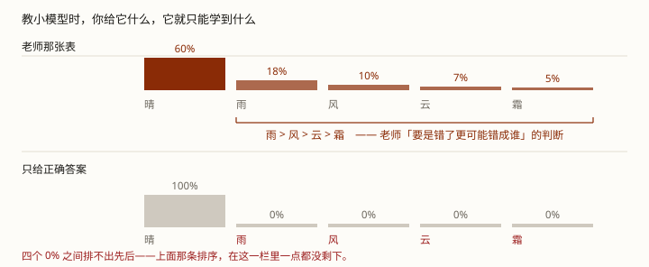

手机里那个几 GB 的小模型，凭什么也能写代码、做数学题？它是自己练出来的，还是有人教的。
这一课是 第 5 课的另一半。前面你见过「量化」这个词，但量化干的事只是换个存法——模型学到的东西一个没动。
那真正让小模型变强的是另一件事。它有个名字叫蒸馏（distillation），一句话版本：让一个小模型照着一个大模型学，学的不只是答案。
先拆一个误会，因为这词最容易被用错：蒸馏不是"把大模型的答案抄下来"。抄答案恰恰是里面最差的一种做法——本课第 2 节会给你看实测。
学完这课，你能分清「量化」和「蒸馏」各改了什么、解释小模型为什么这么强、以及——一条对做 agent 直接要命的判断。
教一个小模型时，你给它什么，它就只能学会什么。所以「答案」和「答案的分布」是两回事：前者只能让它背下题目，后者才能把老师的判断方式搬过去。
后面每一节都挂回它。
它们经常被混着讲，但改的完全不是同一个东西：
| 量化（第 5 课） | 蒸馏（本课） | |
|---|---|---|
| 改什么 | 怎么存：每个数占几个字节 | 从哪来：拿谁当老师 |
| 模型的能力变了吗 | 没变，一个数都没少 | 变了，学的是别人的本事 |
| 什么时候做 | 部署之前 | 训练的时候 |
所以顺序是先蒸馏变小、再量化压小。反过来做，等于把一个本来就没学好的模型再压一遍——它本来就还没学会，你先把它压扁了。
先回忆第 0 课那套训练：出题 → 对答案 → 只给正确答案 → 扣分 → 拧。整张目标表里，答对的那个字拿满分，其他全是 0。
蒸馏的做法不一样：它把老师那一整张概率表当目标——包括那几个"错"字上的分数。

那些"错字"上的分数，为什么不是噪声？Hinton 那篇论文里给了个很好的例子：模型把某个东西误认成垃圾车，这个错误仍然比误认成胡萝卜的可能性大出很多倍。
老师不光说「是晴天」。它还说了：「要是我错了，多半是错成下雨，不会错成下霜。」
这句话里就藏着它的判断方式。而只给正确答案的表里，这一层信息一点都没有——因为那四个候选全都是 0%，0% 和 0% 之间排不出先后。
而这正是蒸馏值得多花力气的原因。Hinton 那篇里有这么一句，是本课最值钱的一句：
蒸馏的时候，我们能让小模型「用和老师一样的方式去泛化」。学生学的不是答案，是老师的泛化方式。（原文是 "we can train the small model to generalize in the same way as the large model"——课件里这句话是转述，英文原句在 RESOURCES.md）
上面那张表里，尾部四个数是 18% / 10% / 7% / 5%——分得开，看得清谁大谁小。但很多情况下不是这样。
回想第 0 课那个玩具：训练完之后，老师给「好 / 冷 / 差」三个几乎一样的分数（32.7% / 34.2% / 33.0%），因为语料里三种都出现过、且一样多。那种时候排序信息本来就很弱。
真正要命的是反过来的情况：模型非常确定第一名（99%），其余候选全挤在 0 附近。那时候"第二名是谁"这件事，根本就被吞掉了——而那恰恰是"如果我错了"最该知道的事。
所以蒸馏会先把老师加热，把分布调软，让那些小差别重新分开。这一步的正式名字是温度（temperature）。Hinton 的原话：
「我们这套更一般的方案叫做蒸馏：把最后一次 softmax 的温度往上抬，直到老师给出一组足够软的目标。训练小模型去匹配这些软目标时，我们用同样的高温度。」
而且他还顺手说了一句：**直接去对齐 logit，其实只是蒸馏的一个特例。**
所以温度是两头都不能要的：太低，尾部被压成一条线；太高，尾部被抹平到分不出先后。脚本第 5 节把这两个方向都跑出来了。
顺带一提：这正是第 1 课那个 temperature。同一个旋钮，训练时用来把老师的分布摊开，生成时用来决定挑哪个字——同一个东西，两个方向都在用。
这一节是为了防止你读到的资料互相打架。实际工程里，蒸馏被用来说两种不同的事：
另外还有第三条路，也不该算在蒸馏头上：用大模型来造数据。phi-1.5 就是这条路——它用已有的大模型生成"教科书级"的语料，训练出一个 1.3B 的小模型，在很多语言任务上和一些大它 5 倍的模型相当。
三条路一起走：造更好的数据 · 蒸馏 · 更好的后训练。不是"全靠蒸馏"。
这一条值得记住，因为你如果只记住"小模型是蒸馏来的"，就会顺手推出"小模型一定继承了老师的一切"——那个推论是错的，下一节就是它的反面例子。
上面讲的是机制。看看实际搬出来的效果——R1 官方仓库公布的蒸馏模型实测表：
| 模型 | AIME 2024 | MATH-500 | GPQA | LiveCodeBench |
|---|---|---|---|---|
| R1-Distill-Qwen-1.5B | 28.9 | 83.9 | 33.8 | 16.9 |
| R1-Distill-Qwen-7B | 55.5 | 92.8 | 49.1 | 37.6 |
这些数字背后有个容易被跳过的事实：论文里蒸馏模型比的是它自己的指令版（同一个底子、没做蒸馏那一版），不是拿 1.5B 去和 R1 比。蒸馏提升的是"同尺寸的模型能到哪"，不是"小模型追平大模型"。
前面说过好几次，本轨道讲的每件事最后都要回到 agent。那么——一个蒸馏出来的小模型，能不能拿来跑 agent？
这里有一条论文自己写的答案，而且是在它的「局限」那一节里。R1 论文的原话：
它的结构化输出能力「remain suboptimal compared to existing models」（比现有模型差）。而且原文下一句更直接：「DeepSeek-R1 cannot leverage tools」——它没法调用工具，搜索引擎、计算器都用不上。
而 agent 的命脉恰恰就是工具调用（见 Agent 原理篇 · 第 2 课）。所以：
这和第 5 课那条结论是同一条：那边说"格式敏感的活，量化要压着来"，这边说"推理强的模型，工具调用未必行"。跑得动和用得对，是两件事。
脚本在工作区：exercises/llm/0007-distillation.py。只用 Python 标准库，离线能跑。它做一个能真量出来的小实验：
造两份故意排得不一样的语料（老师说「雨比云更可能」，学生自己的数据说「云比雨更可能」），然后用三种教法训练三个学生——骨架一样、步数一样，只有"你给它什么"不同。
python exercises/llm/0007-distillation.pyWindows 终端若中文乱码，先执行 chcp 65001。下面是输出摘录（跑了就有完整的）。
[1] 先造两份语料。它们故意排得【不一样】——这是本脚本的关键
来源 规模 晴 雨 风 云 霜 尾部排序（非第一名）
老师见过的 100 60% 18% 10% 7% 5% 雨 > 风 > 云 > 霜
学生手上的 50 60% 10% 10% 12% 8% 云 > 雨 > 风 > 霜
——老师说「雨比云更可能」，学生自己的数据说「云比雨更可能」。
所以「雨 > 风 > 云 > 霜」这个排序，只存在于老师的分布里。
[3] 三个学生，骨架一样、步数一样，只有「你给它什么」不同
教法 离老师多远 尾部排序 尾部差距 第一名多自信
A 正确答案（one-hot） 0.080 错 4.0 pp 60%
B 只搬老师的答案（argmax） 0.400 并列 0.0 pp 100%
C 搬老师的整张分布（蒸馏） 0.000 对 13.0 pp 60%
（老师自己的尾部差距是 13.0 pp）
A 正确答案（one-hot） 晴 60.0% 雨 10.0% 风 10.0% 云 12.0% 霜 8.0%
B 只搬老师的答案（argmax） 晴 100.0% 雨 0.0% 风 0.0% 云 0.0% 霜 0.0%
C 搬老师的整张分布（蒸馏） 晴 60.0% 雨 18.0% 风 10.0% 云 7.0% 霜 5.0%
[4] 三条要看懂的
A 离老师 0.080，尾部排序错（差距只有 4.0 pp）。
它学到的是【学生自己那份小语料的频率】——语料里没有的东西，它学不到。
B 离老师 0.400，尾部并列，第一名拿了 100%。
这是最糟的一档：整套排序全丢了，还额外得到一个【过度自信】的学生。
「只搬老师的答案」听起来像蒸馏，其实不是。
C 离老师 0.000，尾部排序对，差距 13.0 pp——和老师一样。
它没有见过老师那份语料，只是照着那 5 个数反复拧，就复现了老师的排序。
——被搬过来的不是答案，是【泛化方式】。
[5] 那为什么要【加热】老师（temperature）？看尾部就明白了
温度 晴 雨 风 云 霜 尾部排序
0.5 87.8% 7.9% 2.4% 1.2% 0.6% 雨 > 风 > 云 > 霜
1.0 60.0% 18.0% 10.0% 7.0% 5.0% 雨 > 风 > 云 > 霜
3.0 31.8% 21.3% 17.5% 15.5% 13.9% 雨 > 风 > 云 > 霜
8.0 24.1% 20.7% 19.2% 18.4% 17.6% 雨 > 风 > 云 > 霜
——注意这个玩具里【排序】四种温度下都没变（雨>风>云>霜）。
真正被温度改变的是【尾部之间的差距】：
0.5 档：尾部挤成 7.9% / 2.4% / 1.2% / 0.6%——四个数已经快贴成一条线；
（这个玩具只有 5 个候选，再挤也挤不到 0；真实词表是几万量级，
所以实际训练里尾部会被压得更狠，这是要留意的方向。）
8.0 档：尾部被抹平到 20.7% / 19.2% / 18.4% / 17.6%——谁大谁小也看不清了。
所以温度是【两头都不能要】：太低压掉尾部，太高抹平尾部。三处要看懂：
Q1 蒸馏和量化，最本质的区别是什么？
Q2 蒸馏时，除了正确答案，还要给模型什么？
Q3 为什么蒸馏要先调高温度？
Q4 「只把小模型的答案换成老师的答案」，算蒸馏吗？
Q5 「小模型为什么这么强」，最诚实的说法是？
Q6 想拿蒸馏小模型跑 agent，最该先测哪一维？
RESOURCES.md 里。
前置：LLM 底层 · 第 5 课 · 量化（另一半；两课合起来才是"让模型变小"这件事）· 第 6 课 · 会思考的模型（"搬家"的两个理由之一，另一个是第 0 课的规模）
这条轨道到此为止：七课走完了一条线——模型里发生了什么 → 一次请求怎么跑 → 时间/带宽/精度怎么被优化 → 能力从哪来。回到课程目录
接下来往哪走：Agent 原理篇 · 第 1 课（真动手做一个）· 技巧篇 0001 · 上下文工程（本课第 6 节那条「工具调用要专门测」的前置）
术语表：蒸馏 distillation · 量化 quantization · 温度 temperature · Logits / Softmax